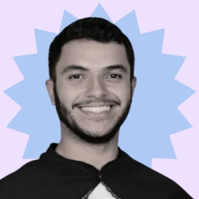

Rápido no celular
Abre rápido até em 4G fraco. Quem clica no anúncio não desiste esperando carregar.
[01] sites · landing pages · anúncios · whatsapp
Criamos, colocamos no ar e deixamos pronto para anúncio, com rastreamento, texto que vende e aviso de cada novo contato. Você cuida do negócio.
[02]trabalhos
Demonstrações com marcas inventadas e uma loja de cliente real. Todas funcionam: clique na tela para abrir o site e usar de cima a baixo.
nestes vinte e seis sites você encontra
as marcas desses sites
[03]não é só um site
O site é o único canal inteiramente seu. Rede social muda a regra, anúncio para quando a verba acaba; o site continua trabalhando. O que um modelo pronto não faz:
Abre rápido até em 4G fraco. Quem clica no anúncio não desiste esperando carregar.
Você sabe qual anúncio, busca ou post trouxe cada contato. O anúncio fica medido desde o primeiro dia.
A gente escreve tudo, com foco em transformar visita em contato. Você não precisa escrever nada.
Quem preenche o formulário chega no seu WhatsApp ou no seu e-mail, com os dados organizados.
[04]para quem fazemos
O cliente pesquisa antes de ligar. O site certo mostra autoridade no seu segmento antes da primeira conversa.
Site sóbrio e informativo, dentro das normas de publicidade da OAB.
Médica, odontológica, nutrição, fisioterapia. Agendar fica fácil, e o texto respeita as normas do conselho.
Portfólio de obras, registro no CREA ou no CAU e o seu processo explicado.
Quem você atende, como trabalha e qual é o próximo passo, sem rodeio.
Vitrine de imóveis com filtro e captação de proprietário.
Reformulação de site. A gente aproveita o que funciona, refaz o que perde cliente e deixa pronto para anúncio.
[05]o que fazemos
Primeiro o site, porque é nele que o cliente decide. Google, anúncio e WhatsApp vêm junto para levar gente até ele.
Para construironde o cliente decide contratar você
Site para passar confiança, landing page para transformar anúncio em contato. Rápidos no celular e prontos para o Google. Não é tema pronto com o seu logo em cima.
Catálogo, carrinho, frete e pagamento. A sua loja no seu domínio, sem depender de marketplace para vender.
A parte do processo que hoje é planilha e mensagem solta vira sistema. Abre no navegador e pode ser instalado na tela do celular.
Para trazer clientepara quem procura achar você e ser atendido
Bem configurado, põe você no mapa de quem procura perto. Mal configurado, manda o cliente para o concorrente.
Ver por quê ↓Campanha no Google e no Meta acompanhada toda semana, medida em contato e venda, não em curtida.
Ver por quê ↓Responde em segundos, tira dúvida e agenda, até fora do horário.
Quem já comprou de você é chamado de volta e volta.
Planejamento e posts para manter o perfil vivo. Entra como complemento do resto: o nosso forte é o que traz cliente, não curtida.
[06]dores e soluções
Escolha o canal e veja a diferença entre o mal feito e o bem feito. Em cada um, a Theatrum configura, opera e acompanha.
É a primeira coisa que aparece quando alguém procura o seu serviço na sua cidade. Ou é você, ou é o concorrente.
no longo prazoO prejuízo não aparece num dia, aparece no ano. Cada mês com o perfil errado é um mês de cliente indo para quem está no mapa. E o perfil bem feito é o canal que menos custa por cliente: o cliente já está procurando, e você não paga por clique.
A mesma verba pode trazer cliente ou simplesmente sumir. O que muda é quem cuida da campanha.
no longo prazoCampanha bem gerenciada aprende: cada mês sabe mais sobre quem compra de você, e a verba vai ficando mais certeira. Campanha largada só repete o erro, com o seu dinheiro.
O cliente que chamou está pronto para fechar. Se ninguém responde, ele chama o próximo da lista.
no longo prazoCada mensagem sem resposta é um cliente que já tinha decidido comprar. Atender rápido não custa verba de anúncio nenhuma.
[07]demonstração
Escolha o seu tipo de negócio e acompanhe um cliente do Google até o seu WhatsApp. Cada etapa mostra o que a Theatrum entrega ali e quanto custa.
R$ 1.500 no Pix no plano Completo, ou 3x de R$ 600 no cartão (condição de lançamento)
R$ 97/mês para os 10 primeiros clientes
R$ 697/mês + verba na sua conta
[08]o cálculo
Quatro perguntas. Nenhum cadastro. O número aparece na hora.
[09]investimento
Três planos, conforme o tamanho do projeto. No diagnóstico gratuito a gente diz qual deles serve para o seu caso.
Para começar a anunciar com uma página que leva ao seu WhatsApp.
de preço cheio: R$ 1.500preço de lançamento: R$ 990
Para ser encontrado no Google e receber o contato já meio caminho andado.
de preço cheio: R$ 2.500preço de lançamento: R$ 1.500no Pix50% no início, 50% na entregaou 3x de R$ 600 no cartão
Para quem precisa de sistema junto com o site.
de preço cheio: R$ 4.900a partir depreço de lançamento: R$ 2.500
de preço cheio: R$ 197/mêspreço de lançamento: R$ 97/mês
Para os 10 primeiros clientes, mantido enquanto o contrato estiver ativo. Inclui hospedagem, segurança, backup e até 2 ajustes por mês. Fidelidade de 12 meses.
[10]quem faz

Sou o Matheus. Antes de escrever código eu assentei piso, levantei parede e trabalhei em obra. Sei o que é depender de indicação e sei o que é um mês fraco chegando com as contas iguais às do mês bom.
Sou formado em Sistemas de Informação e hoje construo site, tráfego e automação para pequenos negócios no Brasil e nos Estados Unidos.
Não tem equipe de atendimento entre nós dois. Quem responde no WhatsApp sou eu.
Theatrum · CNPJ 61.978.753/0001-60
por trás de cada projeto
Cada agente cuida de uma parte do trabalho, do primeiro rascunho do site ao relatório do anúncio. Eu distribuo, confiro e aprovo tudo antes de chegar em você. É assim que uma ideia sai do papel rápido, sem perder o cuidado de quem responde pelo resultado.
agente 01
Sites e sistemas monta a prévia do seu site ou sistema a partir da nossa conversaagente 02
Demonstrações cria exemplos por tipo de negócio, como os da vitrine lá em cimaagente 03
Google e tráfego prepara o Google Meu Negócio, as campanhas de anúncio e os relatóriosagente 04
Marketing e criativos produz as peças de anúncio, panfleto e redes sociais no tamanho certo de cada redeagente 05
Revisão confere tudo antes de ir ao ar: texto, links e velocidade[11]como funciona
A gente olha o seu site atual (ou a falta dele), o Google e os concorrentes, e mostra onde você perde cliente.
Você vê o seu site com a cara da sua empresa antes de pagar. Se gostar, a gente fecha.
Ajustamos o que você pedir e colocamos no ar em 7 a 10 dias úteis depois de receber o conteúdo, com rastreamento e aviso de contato funcionando.
A primeira campanha sobe com o primeiro mês de gestão pela metade do preço, e cada contato chega avisado no seu WhatsApp.
[12]perguntas diretas
[13]vamos conversar
O diagnóstico gratuito mostra onde o seu negócio perde cliente hoje e o que o site, o Google e o anúncio fariam com cada ponto. Sem compromisso, sem enrolação.